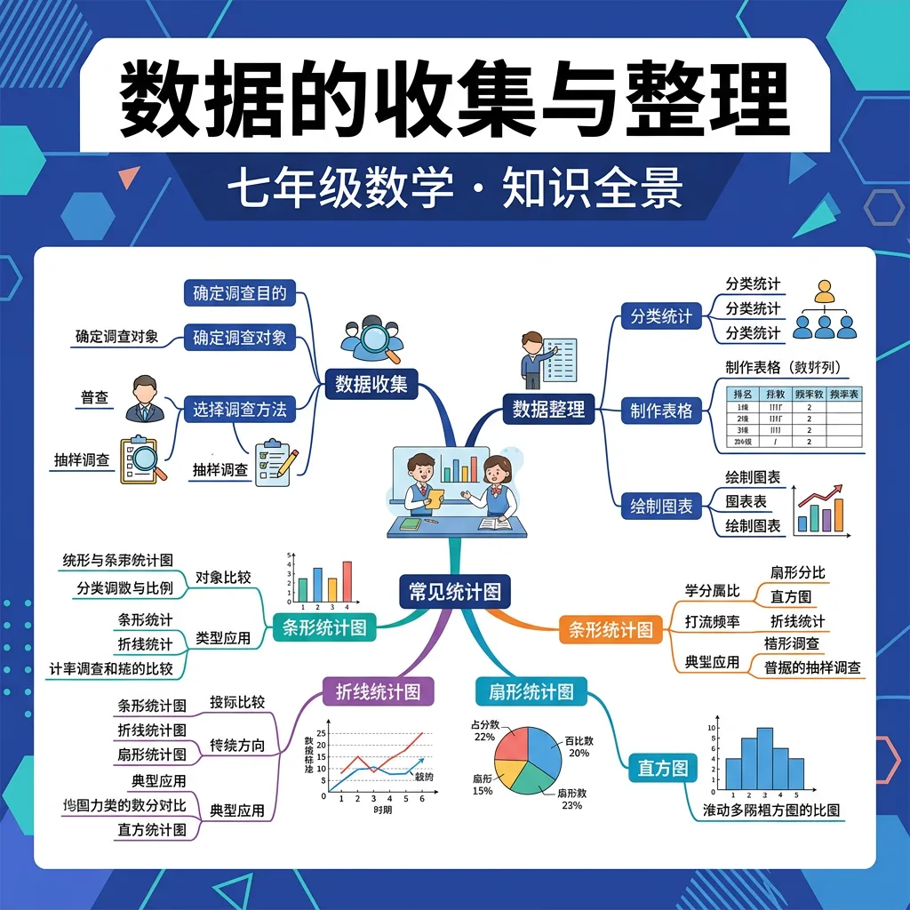

从生活中提取信息，用数据说话！
七年级数学 · 统计与概率
📝 问题引入：七年级一班要调查同学们每天的睡眠时间，班长小明设计了一个问卷。他在问卷里写了"你睡多少小时？A.少于6小时 B.6-8小时 C.8小时以上"，这样的问卷有什么问题？数据收集有哪些讲究？
以下是一份调查"同学们每天户外运动时间"的问卷，请帮助完善它：
问题：你每天的户外运动时间是多少？
🎒 问题引入：全班40名同学参加了数学测试，老师拿到了40个分数。这些数字密密麻麻，很难看出规律。如果把分数分成若干区间，统计每个区间有多少人，就会清晰多了——这就是频数分布表和条形图的威力！
以下是40名同学的数学成绩（拖动滑块调整分组）：
你的班级要举办"最受欢迎课外活动"投票，请你设计一套完整的数据收集与整理方案：
点击为各活动投票，模拟班级数据收集过程：
1. 你能举出生活中数据收集的例子吗？2. 定量数据和定性数据的主要区别是什么？
1. 描述一种数据收集方法及其适用场景。2. 解释数据收集过程中可能遇到的误差和偏差。
常见误区是认为所有数据收集方法都适用于任何研究。错因在于忽视了不同研究目标和数据类型的特性。诊断时应根据研究需求选择最合适的数据收集方法。
设计一个实验，用于收集和分析学生在线学习行为的数据。分析这些数据如何帮助改进在线教育平台的设计和功能。
先独立作答，再点选项查看对错与错因。
要获取全校学生家庭垃圾分类实施情况，最可靠的方法是
整理混合格式数据时，应首先
电子问卷比纸质问卷的优势主要体现在
将纸质记录“可回收物：3kg/天”转换为电子数据时，应在____字段填写计量单位
答案：单独
避免数值与单位混合影响计算
当某班有5份问卷未填写垃圾分类频率，在统计准确率时应将这些数据____处理
答案：剔除
缺失数据影响统计有效性
关于抽样调查的理解正确的是
比较不同班级的垃圾分类准确率数据